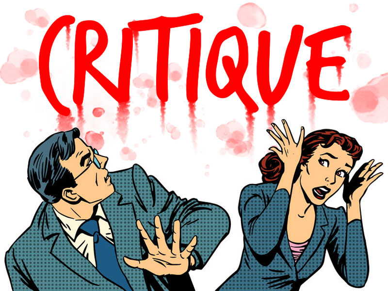

Critique
-
The Room of Silence
“The Room of Silence,” is a short documentary about race, identity and marginalization at the Rhode Island School of Design. Based on interviews conducted by myself and the campus organization Black Artists and Designers, this film contains well under a third of the stories we collected in March 2016, and an unknown fraction of the stories belonging to students we didn’t have a chance to meet with.
The Room of Silence from Eloise Sherrid on Vimeo